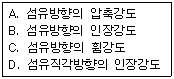
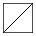
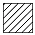
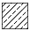
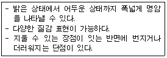
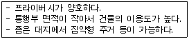
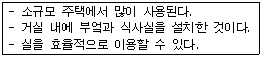
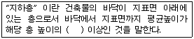

전산응용건축제도기능사 (2009-01-18 기출문제)
1과목: 건축구조
1. 한켜는 길이쌓기로 하고 다음은 마구리쌓기로 하며 모서리에 칠오토막을 써서 아무리는 벽돌쌓기법은?
- 영식 쌓기
- 화란식 쌓기
- 불식 쌓기
- 미식 쌓기
(정답률: 78%)

2. 다음 중 테두리보에 대한 설명으로 옳지 않은 것은?
- 철근콘크리트 블록조에 있어서 벽체를 일체화하기 위해 설치한다.
- 테두리보의 나비는 보통 그 밑의 내력벽 두께보다는 작아야 한다.
- 최상층의 경우 지붕 슬래브를 철근콘크리트 바닥판으로 할 경우에는 테두리보를 따로 쓰지 않아도 좋다.
- 테두리보는 폐쇄된 수평면의 골조를 구성해야 한다.
(정답률: 55%)
3. 철근콘크리트 사각형 기둥에는 주근을 최소 몇 개 이상 배근해야 하는가?
- 2개
- 4개
- 6개
- 8개
(정답률: 91%)
4. 다음 중 내민보(cantilever beam)에 대한 설명으로 옳은 것은?
- 연속보의 한 끝이나 지점에 고정된 보의 한 끝이 지지점에서 내민 형태로 달려 있는 보를 말한다.
- 보의 양단이 벽돌, 블록, 석조벽 등에 단순히 얹혀있는 상태로 된 보를 말한다.
- 단순보와 동일하게 보의 하부에 인장주근을 배치하고 상부에는 압축철근을 배치한다.
- 전단력에 대한 보강의 역할을 하는 늑근은 사용하지 않는다.
(정답률: 61%)
5. 다음 중 목조벽체를 수평력에 견디게 하고 안정한 구조로 하는데 필요한 부재는?
- 멍에
- 가새
- 장선
- 동바리
(정답률: 79%)
6. 다음 중 철골조에서 기둥과 기초의 접합부에 사용되는 것이 아닌 것은?
- 기초판(base plate)
- 사이드 앵글(side angle)
- 클립 앵글(clip angle)
- 거셋 플레이트(gusset plate)
(정답률: 65%)
7. 다음 중 건물의 부동침하 원인과 가장 관계가 먼 것은?
- 연약층
- 경사지반
- 지하실을 강성체로 설치
- 건물의 일부 증축
(정답률: 80%)
8. 프리스트레스트 콘크리트(prestressed concrete) 구조의 특징으로 옳지 않은 것은?
- 간 사이를 길게 할 수 있어서 넓은 공간을 설계할 수 있다.
- 부재 단면의 크기를 작게 할 수 있으며 진동이 없다.
- 공기를 단축할 수 있고 시공과정을 기계화할 수 있다.
- 고강도 재료를 사용하므로 강도와 내구성이 큰 구조를 만들 수 있다.
(정답률: 59%)
9. 다음 건축구조의 분류 중 라멘 구조에 해당하는 것은?
- 철근콘크리트구조
- 조적조
- 벽식구조
- 트러스구조
(정답률: 51%)
10. 다음 중 철근의 정착길이의 결정요인과 가장 관계가 먼 것은?
- 철근의 종류
- 콘크리트의 강도
- 갈고리의 유무
- 물-시멘트비
(정답률: 74%)
11. 다음 중 철계단에 대한 설명으로 옳지 않은 것은?
- 피난계단에 적당하다.
- 철계단의 접합은 보통 볼트조임, 용접 등으로 한다.
- 구조가 복잡하여 형태가 자유롭지 못하다.
- 공장, 창고 등에 널리 사용된다.
(정답률: 84%)
12. 다음 중 블록구조에 대한 설명으로 옳지 않은 것은?
- 외관이 장중 미려하다.
- 내화적이다.
- 내구성 내마멸성이 우수하다.
- 목구조에 비해 가공이 용이하다.
(정답률: 57%)
13. 다음 중 주택에 일반적으로 사용되는 지붕이 아닌 것은?
- 모임지붕
- 박공지붕
- 평지붕
- 톱날지붕
(정답률: 86%)
14. 다음 중 목구조에 대한 설명으로 옳지 않은 것은?
- 전각·사원 등의 동양고전식 구조법이다.
- 가구식구조에 속한다.
- 친화감이 있고, 미려하나 부패에 약하다.
- 큰 단면이나 긴 부재를 얻기 쉽다.
(정답률: 76%)
15. 다음 중 거푸집 상호간의 간격을 유지하는데 쓰이는 긴결재는?
- 꺽쇄
- 컬럼밴드
- 세퍼레이터
- 듀벨
(정답률: 56%)
16. 다음 중 지붕 및 바닥 등을 인장력을 가한 케이블로 지지하는 구조양식은?
- 커튼월구조
- 일체식구조
- 조적식 구조
- 현수구조
(정답률: 82%)
17. 다음 중 흙막이벽 공사시 토질에 생기는 현상과 거리가 먼 것은?
- 보일링
- 파이핑
- 언더피닝
- 히빙
(정답률: 47%)
18. 다음 중 용접 결함에 속하지 않는 것은?
- 언더컷(under cut)
- 엔드탭(end tab)
- 오버랩(overlap)
- 블로홀(blowhole)
(정답률: 66%)
19. 다음 중 철골구조에 대한 설명으로 옳지 않은 것은?
- 벽돌구조에 비하여 수평력에 강하다.
- 장스팬 구조가 가능하다.
- 화재에 대비하기 위해서 적당한 내화피복이 필요하다.
- 철근콘크리트구조에 비하여 동절기 기후의 영향을 많이 받는다.
(정답률: 61%)
20. 다음 중 아치(Arch)에 대한 설명으로 옳지 않은 것은?
- 조적벽체의 출입문 상부에서 버팀대 역할을 한다.
- 아치대에는 압축력만 작용한다.
- 아치벽돌을 특별히 주문 제작하여 쓴 것을 층두리 아치라 한다.
- 아치의 종류에는 평아치, 반원아치, 결원아치 등이 있다.
(정답률: 64%)
2과목: 건축재료
21. 건축재료의 성질에 관한 용어로서 어떤 재료에 외력을 가했을 때 작은 변형만 나타나도 곧 파괴되는 성질을 나타내는 것은?
- 전성
- 취성
- 탄성
- 연성
(정답률: 86%)
22. 2장 또는 3장의 유리를 일정한 간격을 띄우고 둘레에는 틀을 끼워 내부는 기밀하게 하고 건조공기를 넣어 방서, 단열, 방음용으로 쓰이는 유리는?
- 강화유리
- 무늬유리
- 복층유리
- 망입유리
(정답률: 77%)
23. 다음 중 석고 보드에 대한 설명으로 옳지 않은 것은?
- 시공이 용이하고 표면가공이 다양하다.
- 부식이 안되고 충해를 받지 않는다.
- 단열성이 높다.
- 내수성이 높아서 흡수로 인한 강도저하가 거의 없다.
(정답률: 69%)
24. A.E제를 사용한 콘크리트에 대한 설명 중 옳지 않은 것은?
- 물-시멘트비가 일정한 경우 공기량을 증가시키면 압축강도가 증가한다.
- 시공연도가 좋아지므로 재료분리가 적어진다.
- 동결융해작용에 의한 마모에 대하여 저항성이 증대시킨다.
- 철근에 대한 부착강도가 감소한다.
(정답률: 50%)
25. 다음 중 현대 건축 재료의 일정방향에 대한 설명으로 옳지 않은 것은?
- 고성능화, 공업화
- 프리패브화의 경향에 맞는 재료개선
- 수작업과 현장시공에 맞는 재료개발
- 에너지 절약화와 능률화
(정답률: 83%)
26. 건축물의 내외면 마감, 각종 인조석 제조에 주로 사용되는 시멘트는?
- 실리카시멘트
- 조강포틀랜드시멘트
- 팽창시멘트
- 백색포틀랜드시멘트
(정답률: 71%)
27. 다음 중 요소수지에 대한 설명으로 옳지 않은 것은?
- 착색이 용이하지 못하다.
- 마감재, 가구재 등에 사용된다.
- 내수성이 약하다.
- 열경화성 수지이다.
(정답률: 52%)
28. 다음 중 천연 아스팔트가 아닌 것은?
- 레이크 아스팔트
- 로크 아스팔트
- 스트레이트 아스팔트
- 아스팔트타이트
(정답률: 46%)
29. 다음 중 점토의 물리적 성질에 대한 설명으로 옳은 것은?
- 점토의 비중은 일반적으로 3.5~3.6 정도이다.
- 양질의 점토일수록 가소성은 나빠진다.
- 미립점토의 인장강도는 3~10MPa 정도이다.
- 점토의 압축강도는 인장강도의 약 5배정도이다.
(정답률: 62%)
30. 건축재료의 사용 목적에 의한 분류에 속하지 않는 것은?
- 구조재료
- 인공재료
- 마감재료
- 차단재료
(정답률: 70%)
31. 다음 점토제품 중 흡수성이 가장 큰 것은?
- 토기
- 도기
- 석기
- 자기
(정답률: 58%)
32. 황동은 구리와 무엇을 주성분으로 하는 합금인가?
- 주석
- 아연
- 알루미늄
- 납
(정답률: 69%)
33. 다음 중 건물의 외부 벽체 마감용으로 적당하지 않은 석재는?
- 화강암
- 안산암
- 점판암
- 대리석
(정답률: 67%)
34. [보기]의 목재 강도에 대하여 그 강도가 큰 순으로 옳게 나열한 것은?

- A-B-C-D
- D-C-B-A
- A-D-B-C
- B-C-A-D
(정답률: 42%)
35. 경량콘크리트에 관한 기술 중 옳지 않은 것은?
- 일반적으로 기건단위용적중량이 2.0ton/㎥ 이하인 것을 말한다.
- 동일한 물-시멘트비에서는 보통콘크리트보다 일반적으로 강도가 약간 크다.
- 흡수율이 커서 동해에 대한 저항성이 약하다.
- 경량콘크리트는 직접 흙 또는 물에 상시 접하는 부분에는 쓰지 않도록 한다.
(정답률: 56%)
36. 콘크리트에 염화칼슘(CaCl2)을 사용할 때 일어나는 현상으로 옳지 않은 것은?
- 철근의 부식을 방지한다.
- 방동효과가 있다.
- 과도하게 사용할 경우 콘크리트의 내구성을 저하시킬 수 있다.
- 콘크리트의 경화가 촉진된다.
(정답률: 51%)
37. 20kg의 골재가 있다. 5㎜체에 몇 kg이상 통과해야 잔골재라 할 수 있는가?
- 3kg
- 10kg
- 12kg
- 17kg
(정답률: 46%)
38. 다음 시멘트, 콘크리트 제품 가운데 벽체를 구성하는 구조재로 사용 할 수 있는 것은?
- 석면시멘트판
- 목모시멘트판
- 퍼라이트시멘트판
- 속 빈 시멘트 블록
(정답률: 43%)
39. 다음 중 바닥 마감재인 비닐 타일에 대한 설명으로 옳지 않은 것은?
- 아스팔트, 석면, 안료 등을 혼합?가열하고 시트형으로 만들어 절단한 판이다.
- 착색이 자유롭다.
- 내말멸성, 내화학성이 우수하다.
- 아스팔트 타일보다 가열변형의 정도가 크다.
(정답률: 34%)
40. 다음 중 돌로마이트 플라스터에 대한 설명으로 옳지 않은 것은?
- 수축 균열이 발생한다.
- 표면 경도가 회반죽보다 크다.
- 점성이 적어서 풀로 반드시 반죽한다.
- 마그네시아 석회라고도 하며 비중이 2.4정도 이다.
(정답률: 65%)
3과목: 건축계획 및 제도
41. KS D 3503에서 강재의 종류를 나타내는 기호인 SS490의 첫 번째 S가 의미하는 것은?
- 재질
- 형상
- 강도
- 지름
(정답률: 69%)
42. 다음의 단면용 재료 표시 기호 중 석재에 해당되는 것은?



(정답률: 75%)
43. 다음 중 건축제도의 치수 기입에 관한 설명으로 옳은 것은?
- 치수 기입은 치수선을 중단하고 선의 중앙에 기입하는 것이 원칙이다.
- 치수 기입은 치수선에 평행하게 도면의 오른쪽에서 왼쪽으로 읽을 수 있도록 기입한다.
- 치수의 단위는 밀리미터(㎜)를 원칙으로 하고, 반드시 단위 기호를 명시하여야 한다.
- 치수는 특별히 명시하지 않는 한, 마무리 치수로 표시한다.
(정답률: 70%)
44. 다음과 같은 특징을 갖는 투시도 묘사용구는?

- 포스터 칼라
- 연필
- 잉크
- 파스텔
(정답률: 88%)
45. 건축도면 중 건물벽 직각 방향에서 건물의 외관을 그린 것은?
- 입면도
- 전개도
- 배근도
- 평면도
(정답률: 79%)
46. 조적조 벽체에서 1.5B 쌓기의 두께로 옳은 것은? (단, 표준형 벽돌 사용)
- 190㎜
- 220㎜
- 280㎜
- 290㎜
(정답률: 74%)
47. 다음의 건축물의 묘사와 표현 방법에 대한 설명 중 옳지 않은 것은?
- 윤곽선을 강하게 묘사하면 공간상의 입체를 돋보이게 하는 효과가 있다.
- 각종 배경 표현은 건물의 배경이나 스케일, 그리고 용도를 나타내는데 꼭 필요한 때만 적당히 표현한다.
- 일반적으로 건물의 그림자는 건물 표면의 그늘보다 밝게 표현한다.
- 그늘과 그림자는 물체의 위치, 보는 사람의 위치, 빛의 방향, 그림자가 비칠 바닥의 형태에 의하여 표현을 달리한다.
(정답률: 76%)
48. 건축계획과정 중 평면계획에 대한 설명으로 옳지 않은 것은?
- 평면계획은 일반적으로 동선계획과 함께 진행된다.
- 평면계획은 2차원적인 공간의 구성이지만, 입면 설계의 수평적 크기를 나타내기도 한다.
- 실의 배치는 상호 유기적인 관계를 가지도록 계획한다.
- 평면계획시 공간 규모와 치수를 결정한 후 각 공간에서의 생활행위를 분석한다.
(정답률: 54%)
49. 다음 중 근린생활권의 주택지의 단위에 속하지 않는 것은?
- 인보구
- 가로 구역
- 근린 분구
- 근린 주구
(정답률: 79%)
50. 다음 설명에 알맞은 아파트 평면 형식은?

- 편복도형
- 중복도형
- 계단실형
- 집중형
(정답률: 61%)
51. 다음 설명에 알맞은 주택의 실 구성형식은?

- K 형
- DK 형
- LD 형
- LDK 형
(정답률: 74%)
52. 다음 중 같은 색상의 청색 중에서 가장 채도가 높은 색은?
- 순색
- 명청색
- 암청색
- 탁색
(정답률: 62%)
53. 건축물의 외벽, 창, 지붕 등에 설치하여 인접 건물에 화재가 발생하였을 때 수막을 형성함으로써 화재의 연소를 방재하는 설비는?
- 스프링쿨러 설비
- 연결 살수 설비
- 옥내 소화전 설비
- 드렌처 설비
(정답률: 63%)
54. 주택의 단위 공간계획에 대한 설명 중 옳지 않은 것은?
- 거실의 형태는 일반적으로 직사각형의 형태가 정사각형의 형태보다 가구의 배치나 실의 활용상 유리하다.
- 식당의 위치는 기본적으로 부엌과 근접 배치시키는 것이 이용상 편리하다.
- 거실은 통로로 쓰이는 면적을 줄이기 위해, 현관애서 먼 곳이나, 평면상 중앙에 위치시키는 것이 바람직하다.
- 침실은 소음원이 있는 쪽은 피하고, 정원 등의 공지에 면하도록 하는 것이 좋다.
(정답률: 73%)
55. 증기, 가스, 전기, 석탄 등을 열원으로 하는 물의 가열장치를 설치하여 온수를 만들어 공급하는 설비는?
- 변전설비
- 배수설비
- 급수설비
- 급탕설비
(정답률: 78%)
56. 다음 중 온수난방에 대한 설명으로 옳은 것은?
- 예열 시간이 증기난방에 비해 짧다.
- 증기난방에 비해 방열면적과 배관이 작다.
- 한랭시 난방을 정지하였을 경우 동결의 우려가 없다.
- 현열을 이용한 난방이므로, 증기난방에 비해 쾌감도가 높다.
(정답률: 60%)
57. 건축 계획 단계에서 설계자의 머릿속에서 이루어진 공간의 구상을 종이에 형상화하여 그린 다음, 시각적으로 확인하는 것은?
- 에스키스
- 스킵
- 켑쳐
- 뎃상
(정답률: 45%)
58. 잔향 시간에 대한 설명으로 옳은 것은?
- 음 에너지의 밀도가 최소 값보다 30dB 감소하는데 걸리는 기간이다.
- 잔향 시간은 실의 용적에 비례하고 흡음력에 반비례한다.
- 잔향 시간이 길면 음량이 적어지고, 잔향 시간이 없으면 음이 명료하지 않아 음을 듣기 어렵게 된다.
- 잔향 시간은 실의 형태에 크게 영향을 받는다.
(정답률: 60%)
59. 액화석유가스(LPG)에 대한 설명으로 옳지 않은 것은?
- 용기(bomb)에 넣을 수 있다.
- 가스 절단 등 공업용으로도 사용된다.
- 프로판 가스(propane gas)라고도 한다.
- 공기 보다 가볍다.
(정답률: 83%)
60. 다음은 건축법에 따른 지하층의 정의이다. ( )안에 알맞은 내용은?

- 2분의 1
- 3분의 1
- 4분의 1
- 5분의 1
(정답률: 79%)